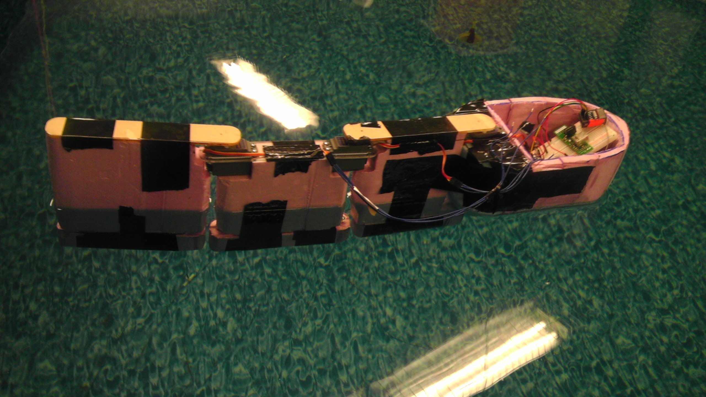

Mechanical System

Our final mechanical system involves a body constructed of foam, acrylic, metal ballast, and carbon fiber sheet with three actuated joints, designed to swim forwards through biologically-inspired vortex-shedding motion.
Actuation
For forward motion, we followed the biological mechanism of vortex shedding and designed swimming surfaces that move to push against water. The three actuated swimming segments attached to our fish head rotate back and forth following radio control or Arduino-controlled optimized motion patterns, which effectively generates forward motion. A small turning radius (40 cm in intermediate iterations) is achieved by setting the head and final actuated joint and moving only the middle swimming segment.

Prototyping
Before final assembly, we located the weights of each section to maintain a solid upright position for consistent flotation and to minimize roll. After a wobbly first test, we added additional metal ballast to each keel, which further stabilized our prototype and lowered Sparky into the water, thus allowing for more swimming surface for vortex-shedding propulsion. Following this optimized weight placement, Sparky is well-balanced and self-righting, as shown in the short film below.
Body

Three servo motors function as traditional mechanical actuators, with a direct connection to the three body joints which function as swimming segments. A hinge aligned directly below each actuation joint supports the motor and prevents vertical torque. We used a laser cutter to exactly define Sparky’s acrylic “spine”, with equidistant centers of rotation between each joint and motor collars that snugly support each servo. Each servo is further constrained by bolts attaching to the acrylic, which is firmly glued to each foam section.
Foam flesh provides buoyant force and vortex-shedding body filling for efficient swimming; each section is chamfered to allow for 90 degrees maximum rotation about each joint. Weighted foam keels, filled with metal ballast, maintain an ideal draft and provide a self-righting torque to limit roll for maximum stability.
A hollow foam-based head discretely houses electronics; the bottom section, waterproofed by heat-sealing the foam sections, effectively protects the electronics during normal swimming. The splash-proof cap protects from the unlikely result of an overenthusiastic swimming motion, and electronics are further contained in waterproof plastic for additional security. Carbon fiber layup adds awesome aesthetics and firmly attaches each keel, servo, and swimming surface.